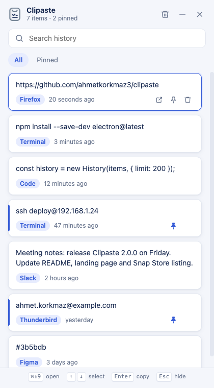

See the source app
Each item shows the app you copied it from: Firefox, Terminal, Code and more.
Clipaste remembers everything you copy. Press CtrlShift9, find the item, press Enter and paste. You also see which app each item came from.
Free and open source · MIT license · Linux, macOS and Windows

Clipaste stays in the tray and records text you copy. Nothing more, nothing less.
Each item shows the app you copied it from: Firefox, Terminal, Code and more.
Start to type and the list filters immediately. Search the text or the app name.
Pinned items stay at hand. They are never trimmed and stay when you clear the history.
Open with one shortcut, move with the arrow keys, copy with Enter, hide with Esc.
Your history stays on your computer. Clipaste skips secrets that password managers mark as concealed.
Clipaste follows the theme of your system automatically.
Clipaste records each text you copy, in any app.
Press CtrlShift9 (⌘⇧9 on a Mac) or click the tray icon.
Click an item or press Enter. It goes back to your clipboard.
Latest version: 2.1.0 · All releases
Snap Store (recommended), AppImage or .deb
sudo snap install clipasteHomebrew or .dmg, for Apple silicon and Intel (macOS 13 or later)
brew install --cask ahmetkorkmaz3/tap/clipasteThe app is not signed. If macOS blocks the first start, open System Settings → Privacy & Security and select Open Anyway.
Installer for Windows 10 and 11 (64-bit)
The installer is not signed. If SmartScreen shows a warning, select More info and then Run anyway.
In a JSON file on your computer: ~/.config/Clipaste/history.json on Linux,
~/Library/Application Support/Clipaste/history.json on macOS and
%APPDATA%\Clipaste\history.json on Windows. The snap keeps it inside ~/snap/clipaste/.
Nothing goes to the internet.
Wayland does not let apps register global shortcuts. Add your own shortcut in
Settings → Keyboard → Custom Shortcuts with the command clipaste --toggle.
You can also click the tray icon.
Clipaste asks the system which app has the focus when the clipboard changes. On Linux this works for X11 apps. Native Wayland apps do not share this information, so their items have no source.
Yes. Open the tray menu and select Start at Login.
Yes. Version 2.0 imports your old history automatically on the first start.